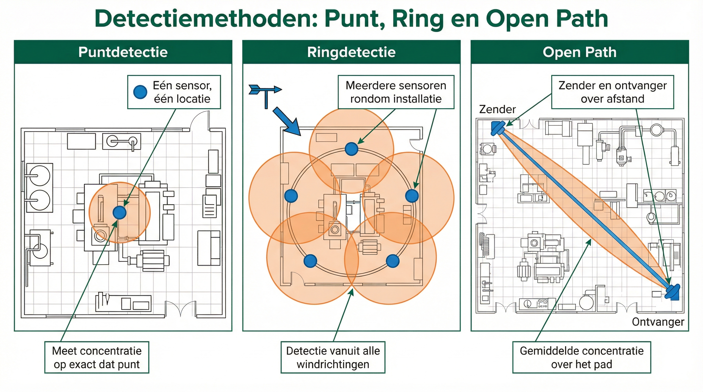
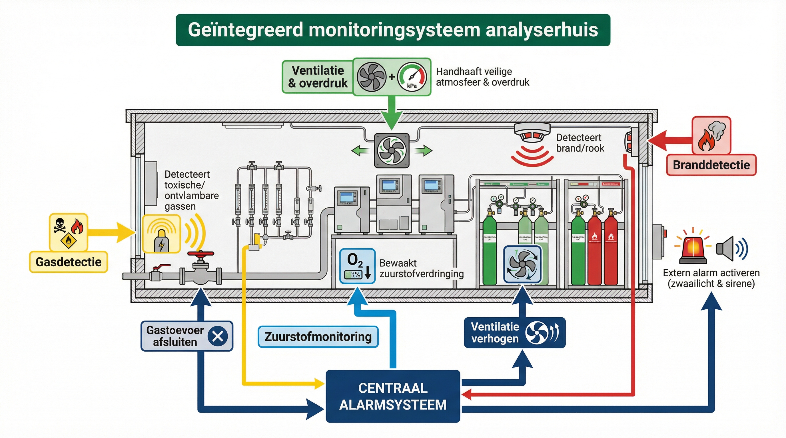
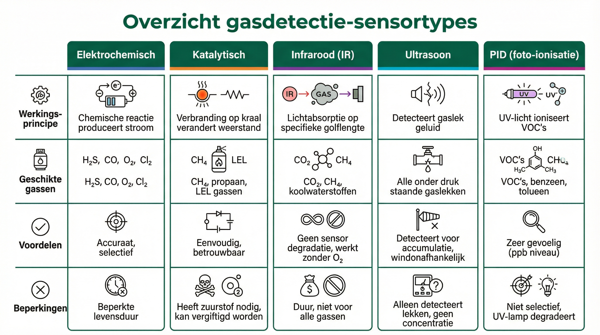

ANA – Module 1
Gas- en branddetectiesystemen worden toegepast om gevaarlijke situaties vroegtijdig te signaleren en escalatie te voorkomen. Gasdetectiesystemen detecteren waar in een unit gas aanwezig is, zodat personeel tijdig kan worden gewaarschuwd en passende maatregelen kan nemen. Branddetectiesystemen spelen een directe rol in effectbeperkende maatregelen, zoals het automatisch inschakelen van bluswater- of inertiseringssystemen. In sommige gevallen kan een branddetectiesysteem ook een installatie stilleggen om verdere escalatie te voorkomen. Binnen analyserhuizen zijn deze systemen van groot belang, omdat ze niet alleen lekkages van explosieve of giftige gassen signaleren, maar ook bijdragen aan de veiligheid van de meetapparatuur en de omgeving. Dit hoofdstuk behandelt de werking, toepassing en integratie van gas- en branddetectiesystemen, zowel binnen procesinstallaties als bij analysersystemen.
2.1 Leerdoelen
Na het afronden van dit hoofdstuk kunnen studenten:
- Uitleggen hoe gasdetectiesystemen werken, inclusief de rol van verschillende soorten sensoren, zoals elektrochemische, katalytische, en infraroodsensoren.
- Beschrijven hoe branddetectiesystemen signalen van brand herkennen en waarom integratie met andere veiligheidssystemen belangrijk is.
- Het belang van zuurstofmonitoring in besloten ruimtes en analyser huizen toelichten, inclusief hoe zuurstofdetectoren functioneren.
- Het belang van monitoring in analyserhuizen uitleggen en de werking van geïntegreerde signaleringssystemen beschrijven.
- Praktische voorbeelden van veiligheidsmaatregelen in gasdetectie, branddetectie, en zuurstofmonitoring begrijpen en toepassen op vergelijkbare situaties.
In een analyserhuis van een raffinaderij ging het methaanniveau onverwacht omhoog. De gasdetector sloeg aan. Dankzij een snelle evacuatie en automatische uitschakeling van het systeem werd erger voorkomen. Wat als die detector niet goed had gewerkt?
2.2 Gasdetectiesystemen
In industriële omgevingen spelen gasdetectiesystemen een cruciale rol bij procesveiligheid en om bijvoorbeeld analyserhuizen te kunnen monitoren. Ze worden gebruikt om gassen te monitoren (zuurstof) en te detecteren, zoals toxische en brandbare gassen. Deze systemen dragen bij aan het vroegtijdig herkennen van gevaarlijke situaties, zodat passende maatregelen genomen kunnen worden om risico's te beheersen. Vaak worden ze ingezet als effectbeperkende maatregel, bijvoorbeeld door bij een gasdetectie een alarm te activeren, ventilatiesystemen in te schakelen of een evacuatieprocedure in gang te zetten om verdere escalatie te voorkomen. Het begrijpen van deze systemen en hun toepassingen is essentieel om veilige werkomstandigheden te garanderen.
Gasdetectiesystemen werken als een soort "neus" voor gevaarlijke gassen in industriële omgevingen. Vergelijk het met een rookmelder thuis: als er iets mis is, krijg je een waarschuwing. In dit geval waarschuwt een gasdetectiesysteem bij brandbare gassen (zoals methaan), giftige gassen (zoals koolmonoxide), of gassen die zuurstof verdringen (zoals stikstof). Deze systemen helpen ongelukken te voorkomen, zoals explosies of verstikking, en worden daarom vaak gebruikt om gevaar op tijd te herkennen en in te grijpen voordat het misgaat.
Hoe werkt een gasdetectiesysteem?
Een gasdetectiesysteem bestaat uit drie belangrijke onderdelen:
- De sensor: Dit is de "neus" die meet hoeveel gas er in de lucht zit.
- Het verwerkingssysteem: Dit zijn de "hersenen" die berekenen of de gemeten waarde veilig is.
- De waarschuwing: Als het gasniveau gevaarlijk wordt, activeert dit onderdeel een alarm of voert het automatisch een actie uit, zoals het afsluiten van een klep.
📷 M1-H2-foto-11: Gasdetectiecentrale / signaalverwerking
Kast met alarmkaarten, modules en displays voor signaalverwerking
Stap 1
De sensor meet continu de gasconcentratie in lucht.
Stap 2
De sensor en de bijbehorende elektronica zetten de meting om in een standaardsignaal, zoals een 4-20 mA of een digitaal signaal. Dit signaal wordt vervolgens doorgestuurd naar het verwerkingssysteem.
Stap 3
Het verwerkingssysteem vergelijkt de gemeten waarde met vooraf ingestelde grenswaarden en bepaalt of er actie nodig is, zoals een alarm inschakelen of ventilatie activeren.
Verschillende veel voorkomende sensoren
Electrochemische sensoren
- Geschikt voor: giftige gassen zoals koolmonoxide of zwavelwaterstof, of het monitoren van zuurstof.
- Werking: chemische reactie wekt een elektrische stroom op; de stroomsterkte (vaak nano-ampère) is een maat voor de hoeveelheid gas.
Katalytische sensoren
- Geschikt voor: brandbare gassen zoals waterstof en koolwaterstoffen.
- Werking: een klein deel van het gas wordt verbrand; de vrijgekomen warmte is een maat voor de concentratie.
Infraroodsensoren
- Geschikt voor: gassen zoals kooldioxide (CO₂) en koolwaterstoffen.
- Werking: meet de afname van infraroodlicht dat deels door het gas wordt geabsorbeerd.
Ultrasoon detectie
- Werking: gebaseerd op geluidsgolven (frequentie en dB).
- Toepassing: detecteert lekkages bij hogedruksystemen, zoals compressoren of leidingen.
Photo-ionisatie sensoren (PID)
- Geschikt voor: stoffen die makkelijk verdampen, zoals oplosmiddelen, benzine of alcohol (vluchtige organische stoffen).
- Werking: ultraviolet (UV) licht geeft de gasdeeltjes een klein elektrisch "schokje".

Foto: LEL-detector (Dräger Polytron) op IR-meetprincipe voor brandbare gassen, gemonteerd in een procesomgeving
📌 Tip: Algemene opmerking: niet-selectieve detectie Veel sensoren meten niet alleen het doelgas, maar reageren ook op andere stoffen. Dit heet niet-selectieve detectie. Dat betekent dat de sensor een signaal geeft als er gas wordt gedetecteerd, maar niet precies kan zeggen welk gas het is. Hierdoor is het belangrijk om bij het interpreteren van de meting rekening te houden met de omgeving en mogelijke storende stoffen.
👀 Belangrijk om te observeren als student
Bij gasdetectiesystemen zijn dit de belangrijkste punten om te leren en observeren:
- Herken de verschillende alarmsignalen: Let op hoe verschillende alarmniveaus worden aangegeven (visueel en akoestisch) en wat ze betekenen - bijvoorbeeld het verschil tussen een vooralarm en een hoofdalarm.
- Observeer de respons op alarmen: Zie hoe procesoperators reageren wanneer een gasdetector een alarm geeft - welke procedure volgen ze en hoe verifiëren ze de situatie?
- Let op locaties van detectoren: Merk op waar veiligheidsfunctionarissen gasdetectoren plaatsen en waarom ze juist daar staan (denk aan de eigenschappen van gassen zoals dichtheid en windrichting).
- Leer correct gebruik van persoonlijke gasdetectie: Als student zul je vaak zelf een persoonlijke gasdetector dragen in risicogebieden. Leer hoe je deze correct moet controleren, dragen en interpreteren, en wat je moet doen als je detector alarm geeft.
📋 Belangrijke leerpunten onder begeleiding
- Je werkplekbegeleider zal je laten zien hoe je alarmen moet interpreteren en erop moet reageren
- Je leert de vluchtwegen en verzamelplaatsen kennen voor noodgevallen
- Je krijgt uitleg over welke types detectoren voor welke gassen worden gebruikt
- Je oefent met het uitvoeren van een bump-test op je persoonlijke gasdetector
📚 Waar vind je meer informatie?
- Bedrijfsnoodplannen beschrijven de procedures bij gasalarmen
- Plattegronden tonen vluchtwegen en locaties van detectoren
- Gebruiksaanwijzingen van persoonlijke gasdetectoren geven specifieke instructies
- Veiligheidsinstructies bij de ingang van risicogebieden tonen specifieke risico's
Toepassing van gasdetectiesystemen: Punt-, ring- en open path detectie

📊 Punt-, ring- en open path detectie
Gasdetectiesystemen kunnen op meerdere manieren worden toegepast. In dit hoofdstuk bespreken we drie manieren De keuze hangt af van de situatie en het soort gas dat moet worden gemeten.
Puntdetectie
- Plaatsing: één sensor op een specifieke locatie, bijvoorbeeld bij een leiding, compressor of analyser.
- Doel: gaslekkages direct bij de potentiële bron opsporen voor snelle actie.
Ringdetectie
- Plaatsing: meerdere detectoren strategisch rondom een installatie of risicozone.
- Doel: gaslekken snel opmerken, ongeacht de windrichting of richting van het gas.
Open pad detectie
Maakt gebruik van straaltechnologie met een zender en ontvanger die samen een detectie pad vormen. Kan gassen detecteren over een langere afstand (vaak tientallen meters tot 100+ meter)
- Door een combinatie van punt-, ring- en lijndetectie kunnen zowel verspreid gas als directe lekkages effectief worden gedetecteerd, waardoor tijdige maatregelen genomen kunnen worden om risico's te beperken, zowel handmatig als volledig automatisch.
📖 Praktijkvoorbeeld: Veilig werken in een waterzuiveringsinstallatie
Tijdens het verwerken van organisch afval in een waterzuiveringsinstallatie komt zwavelwaterstof (H₂S) vrij. Dit gas ruikt naar rotte eieren en is zelfs bij lage concentraties giftig.
Elektrochemische sensoren bij tanks en leidingen meten continu het H₂S-niveau. Bij een concentratie die hoger is dan ingesteld, activeert het systeem een alarm. Bij bijvoorbeeld een analyserhuis schakelt een tweede ventilator automatisch in om het gas te verwijderen, en medewerkers worden gewaarschuwd om het analyserhuis te verlaten. Dit voorkomt gezondheidsrisico's en houdt de werkomgeving veilig.
Welke sensor is het meest geschikt voor het detecteren van zwavelwaterstof (H₂S)?
A) Infraroodsensor
B) PID-sensor
C) Elektrochemische sensor
D) Ultrasoon sensor
2.3 Branddetectiesystemen
📷 M1-H2-foto-12: Branddetector (rookmelder of vlamdetector)
Industriële branddetector: rookdetector, vlamdetector of VESDA
Praktijksituatie
Stel je voor dat je thuis een rookmelder hebt die afgaat wanneer er rook in de kamer is. Dat is een voorbeeld van een simpel branddetectiesysteem. In de industrie zijn branddetectiesystemen veel geavanceerder, omdat ze moeten beschermen tegen complexe en gevaarlijke situaties zoals brand in installaties, analyserhuizen of opslagruimtes.
Branddetectiesystemen zijn ontworpen om brand in een zo vroeg mogelijk stadium te herkennen. Dit kan bijvoorbeeld door rook, hitte of zelfs het licht van vlammen te detecteren. Door vroegtijdige waarschuwingen kunnen mensen veilig vluchten en kunnen automatische systemen maatregelen nemen om de brand te beperken of te blussen. Dit helpt om mensenlevens, apparatuur en productieprocessen te beschermen.
Hoe werken branddetectiesystemen?
Branddetectiesystemen gebruiken sensoren om symptomen van een mogelijke brand te herkennen. Deze symptomen kunnen bijvoorbeeld rook, een stijgende temperatuur of het flikkerende licht van een vlam zijn. Zodra een signaal wordt opgepikt, geeft het systeem een waarschuwing, zoals een alarm of een melding naar de controlekamer. In veel gevallen wordt er ook automatisch actie ondernomen, zoals het activeren van een blusinstallatie of het uitschakelen van apparatuur.
Stap 1
De sensor detecteert een teken van brand (zoals rook, hitte, etc.).
Stap 2
Het systeem vergelijkt de meting met een ingestelde grenswaarde.
Stap 3
Bij een te hoge waarde gaat er een alarm af of wordt automatisch een veiligheidssysteem geactiveerd, zoals een ventilator of een blussysteem.
Soorten branddetectiesystemen
Net zoals er verschillende manieren zijn om gas te detecteren, zijn er verschillende manieren branddetectiesystemen. Elk systeem is ontworpen om een specifiek teken van brand op te sporen:
Rookdetectoren
- Deze detectoren herkennen deeltjes in de lucht die ontstaan door verbranding.
- Een rookdetector "merkt" kleine deeltjes in de lucht op (optische detectie)
- Toepassingen: Worden vaak gebruikt in kantoren, werkplaatsen en analyserhuizen.
- Note: bijzonder type zuigt de lucht actief aan via een leiding in de ruimte, vaak toegepast in ruimtes met elektrische apparatuur. De responsetijd van dit type detectoren is aanzienlijk korter dan een standaard rookdetector (VESDA)
Temperatuursensoren
- Deze reageren op plotselinge temperatuurstijgingen of wanneer een bepaalde temperatuur wordt overschreden.
- Vergelijking: Stel je voor dat je hand boven een hete kookplaat gaat
-- je voelt meteen de hitte. Een temperatuursensor werkt op een vergelijkbare manier.
- Toepassingen: Ideaal voor ruimtes waar rook minder snel opgemerkt wordt, zoals industriële ovens of machinekamers.
Vlamdetectoren
- Deze sensoren "zien" het licht dat door vuur wordt uitgestraald. Ze zijn vaak afgestemd op specifieke golflengtes van ultraviolette (UV) of infrarode (IR) straling.
- Vergelijking: Denk aan hoe je ogen flikkerend kaarslicht kunnen opmerken in een donkere kamer -- een vlamdetector doet hetzelfde, maar dan veel nauwkeuriger.
- Toepassingen: Worden gebruikt in gevaarlijke omgevingen waar vuur snel moet worden gedetecteerd, zoals in petrochemische installaties.
Thermische smeltdetectie
- Deze systemen maken gebruik van materialen die bij hoge temperatuur smelten of vervormen
- Voorbeelden: Plastic buisjes onder druk in pompkamers die bij verhitting smelten en een drukalarm activeren.
- Vergelijking: Vergelijkbaar met een zekering die doorsmelt bij te hoge stroom, maar dan door hitte
- Toepassingen: Veelgebruikt in sprinklersystemen waar glazen ampullen of smeltbare verbindingen bij brand breken/smelten en automatisch het blussysteem activeren
- Voordeel: Eenvoudig, betrouwbaar en vereist geen elektrische voeding om te functioneren
💬 Bespreek in duo's: Welke branddetector zou jij kiezen voor een analyserhuis waar vluchtige oplosmiddelen aanwezig zijn? Waarom juist dat type?
Integratie in veiligheidssystemen
Branddetectiesystemen werken zelden alleen. In de industrie worden ze vaak gekoppeld aan andere veiligheidssystemen om een snelle en effectieve respons mogelijk te maken. Denk hierbij aan:
- Alarmsystemen: Geluid- of lichtsignalen die medewerkers waarschuwen om te evacueren.
- Ventilatiesystemen: Worden ingeschakeld om rook af te voeren en/of te zorgen voor voldoende zuurstof tijdens evacuatie. Na de evacuatie zal de ventilatie dan juist afschakelen om zuurstoftoevoer naar de brand te stoppen.
- Automatische blusinstallaties: Zoals sprinklers, schuimsystemen of gasblussystemen, die de brand kunnen doven zonder menselijke tussenkomst.
Door deze integratie kan een brand snel en veilig worden beheerst, zelfs voordat mensen gevaar lopen.
Praktisch voorbeeld: Branddetectie in een compressorruimte
In een compressorruimte worden gassen onder hoge druk verwerkt. Dit brengt risico's met zich mee, zoals hitteontwikkeling en mogelijke gaslekkages die kunnen leiden tot brand of explosies. Daarom worden in de compressorruimte meerdere soorten branddetectiesystemen geïnstalleerd.
Hoe werkt het systeem?
Vlamdetectoren worden strategisch geplaatst rond de compressoren en leidingen. Deze sensoren detecteren direct het licht van vlammen (UV en/of IR) dat kan ontstaan bij een gasontbranding. Afhankelijk van het product zal de golflengte van de uitgezonden straling bepalen welke type detector er wordt geïnstalleerd. Kan ook gecombineerd worden met video surveillance zodat de operator direct op afstand kan zien of er daadwerkelijk een brand is.
Wat gebeurt er bij een detectie?
Praktijksituatie
Stel dat een vlamdetector vuur signaleert nabij een compressor. Het systeem reageert onmiddellijk:
- Een alarm gaat af in de controlekamer om operators te waarschuwen.
- Het noodstopsysteem kan worden geactiveerd. Dit zorgt ervoor dat: - De compressor direct wordt uitgeschakeld.
- Kleppen automatisch sluiten om de gasstroom te stoppen en verdere verspreiding te voorkomen.
- Een blusinstallatie met schuim of inert gas (zoals stikstof of koolstofdioxide) wordt geactiveerd om het vuur te doven zonder explosiegevaar te vergroten.
Waarom is dit belangrijk?
Compressoren werken met hoge druk en temperaturen. Een kleine ontsteking kan zich snel ontwikkelen tot een grote brand of explosie. Door het branddetectiesysteem wordt het probleem in de kiem gesmoord, wat de veiligheid van het personeel en de installatie beschermt.
Waar/Niet waar Een vlamdetector reageert op zichtbaar licht in plaats van op UV of IR-straling. → Niet waar
Sleepvraag Koppel de branddetector aan de juiste eigenschap:
- Rookdetector → Detecteert kleine deeltjes in de lucht
- Temperatuursensor → Reageert op plotselinge stijging van temperatuur
- Vlamdetector → Detecteert straling van brand
- Thermisch smeltsysteem → Werkt zonder elektriciteit door vervorming of smelten
2.4 Zuurstofmonitoring
Waarom is zuurstofmonitoring belangrijk
Zuurstofdetectie speelt een cruciale rol in industriële werkomgevingen, vooral in afgesloten of besloten ruimtes zoals tanks, analyserhuizen en procesinstallaties. In deze ruimtes kan het zuurstofniveau veranderen door lekkages van inerte gassen, chemische reacties of onvoldoende ventilatie. Een te laag zuurstofniveau kan verstikking veroorzaken, terwijl een te hoog zuurstofniveau het risico op brand of explosies vergroot.
Hoe werkt een zuurstofmonitor De meeste zuurstofdetectoren gebruiken een elektrochemische sensor om het zuurstofniveau in de lucht te meten. Deze sensoren werken op basis van een chemische reactie die een elektrisch stroompje opwekt. Hoe sterker de stroom, hoe meer zuurstof er in de lucht aanwezig is. De sensor bevat een elektrolyt en elektroden. Zuurstof uit de lucht diffundeert (zuurstofmoleculen die vanuit de lucht door een membraan naar de elektrochemische sensor bewegen.) door een membraan naar de elektrode, waar de zuurstofmoleculen reageren met het elektrolyt. Dit proces genereert een elektrische stroom die door de detector wordt gemeten. De detector zet deze stroom om in een zuurstofwaarde, bijvoorbeeld in percentage (20,9% zuurstof is normaal in lucht).
Zodra het zuurstofniveau onder of boven een ingestelde waarde komt, geeft de detector een alarm. Dit maakt direct ingrijpen mogelijk. Draagbare zuurstofdetectoren worden vaak gebruikt door mensen die besloten ruimtes betreden. Stationaire detectoren worden permanent geïnstalleerd in risicozones zoals analyserhuizen.
Een alternatieve technologie voor stationaire zuurstofmeting is de paramagnetische sensor. Deze werkt door het magnetische effect van zuurstof te meten. Zuurstof is licht magnetisch en wordt aangetrokken door een magneet. Door te meten hoe sterk zuurstof reageert op een magnetisch veld, kan het zuurstofniveau worden bepaald. Deze sensoren worden vaak gebruikt in laboratoria of procesinstallaties waar nauwkeurigheid belangrijk is.
Toepassingen Zuurstofdetectie wordt ingezet in verschillende situaties. In tanks wordt vaak stikstof gebruikt om explosieve mengsels te verdringen of chemische reacties te voorkomen. Stikstof verdringt echter ook zuurstof, wat gevaarlijk kan zijn voor mensen die de tank moeten betreden. Door zuurstofdetectie te gebruiken kan vooraf en tijdens het werk het zuurstofniveau worden gecontroleerd. In analyserhuizen kan zuurstofdetectie helpen om gaslekkage te signaleren die het zuurstofniveau verlaagt. Tegelijkertijd kan een te hoog zuurstofniveau in combinatie met brandbare gassen het risico op explosies vergroten. In beide gevallen helpt zuurstofdetectie om deze gevaren vroegtijdig te onderkennen.
📖 Praktijkvoorbeeld
Een onderhoudsmonteur moet een besloten ruimte betreden voor reparatiewerkzaamheden. Voor toegang controleert hij met een draagbare zuurstofdetector het zuurstofniveau, dat 20,9% aangeeft (normaal). Tijdens het werk blijft hij de detector dragen voor continue monitoring. Na 30 minuten geeft de detector plotseling een alarm: het zuurstofniveau is gedaald naar 19,5%. De monteur verlaat onmiddellijk de ruimte, waardoor een potentieel gevaarlijke situatie door zuurstoftekort wordt voorkomen. Later blijkt een kleine stikstoflekkage de oorzaak van de zuurstofverlaging te zijn. Dit voorbeeld toont hoe kritiek zuurstofmeting is bij werkzaamheden in besloten ruimtes.
Waarom kennis van de werking belangrijk is Het begrijpen van de werking van een zuurstofdetector is essentieel voor het veilig gebruik ervan. Door de aanwezigheid van zuurstof neemt de levensduur van de sensor af, waardoor "bump-testen" voor gebruik essentieel is.
Mensen leren waarom kalibratie nodig is om een correcte werking te behouden, hoe een defecte sensor afwijkende metingen kan veroorzaken en waarom de keuze van het juiste type detector cruciaal is voor verschillende toepassingen. Dit helpt hen niet alleen veiliger te werken, maar is ook van levensbelang!
Wat is het normale zuurstofpercentage in lucht onder standaardomstandigheden?
A) 15,0%
B) 18,5%
C) 20,9%
D) 23,0%
Tijdens onderhoud aan een waterzuiveringsinstallatie ruikt een technicus een geur van rotte eieren. De gasdetector meldt H₂S. Wat zijn de juiste handelingen?
A) Direct doorgaan met de werkzaamheden
B) Ventilatie inschakelen en medewerkers waarschuwen
C) Concentratie meten en evacueren bij overschrijding
D) Kalibratie van de sensor controleren
2.5 Monitoring in analyserhuizen
📷 M1-H2-foto-14: Analyserhuis — buitenaanzicht
Overzichtsfoto van analyserhuis van buitenaf
Een analyserhuis is een afgesloten ruimte die gevoelige en kostbare analysersystemen bevat. Deze analysers worden gebruikt om productstromen te meten en processen te controleren. Omdat er vaak gassen door analysers worden gebruikt, is er een reële kans op lekkages en daarmee kans op gevaarlijke situaties.
Waarom is analyserhuis monitoring belangrijk
Monitoring van analyserhuizen is essentieel om de veiligheid van mensen te garanderen, kostbare apparatuur te beschermen tegen schade door brand of ongeschikte zuurstofniveaus, en productieverlies te voorkomen dat kan optreden wanneer analysers hun functie verliezen.

📊 Geïntegreerd monitoringsysteem analyserhuis
Een ander belangrijk aspect is de overdrukventilatie. Dit systeem zorgt ervoor dat het analyserhuis onder een constante positieve druk staat, waardoor externe gevaren zoals giftige gassen of stof niet naar binnen kunnen lekken. Monitoring van overdruk en daarmee juiste werking van de ventilatie is een essentieel onderdeel van de veiligheid.
📷 M1-H2-foto-15: Ventilatiesysteem analyserhuis
Ventilatiesysteem: luchttoevoer, afvoer, ventilator
Hoe werkt monitoring in analyserhuizen In eerdere delen van dit hoofdstuk hebben we uitgebreid besproken hoe gasdetectie (2.2), zuurstofdetectie (2.4) en branddetectie (2.3) werken. In analyserhuizen worden deze detectiesystemen gecombineerd in een geïntegreerd signalerings- en alarmeringssysteem dat continu verschillende parameters bewaakt.
Gasdetectie
Detecteert specifieke gassen zoals methaan, waterstofsulfide of andere brandbare/giftige gassen.
Zuurstofmonitoring
Controleert of het zuurstofniveau binnen veilige grenzen blijft om verstikking of explosiegevaar te voorkomen.
Branddetectie
Signaleert vroegtijdig rook, hitte of vlammen.
Ventilatie
De verversingsgraad wordt bewaakt door middel van flow en de druksensoren bewaken de overdruk ten opzichte van de buitendruk. Hiermee wordt opbouw van giftige of explosieve gassen in het analyserhuis zoveel mogelijk voorkomen. Aanvoer van verse lucht wordt gedaan vanuit safe area, of bewaakt door gasdetectie. Op deze wijze wordt voorkomen dat ongewenste gassen het analyserhuis van buiten naar binnen kunnen komen.
Wanneer een parameter buiten veilige grenzen komt, reageert het systeem met:
- Alarmen: Zowel binnen als buiten het analyser huis worden visuele (zwaailichten) en akoestische signalen (sirenes), hoorbaar binnen en buiten geactiveerd. Dit is om de aanwezige technici in het analyser huis als in de buurt te waarschuwen voor mogelijk gevaar.
- Automatische acties: Zoals het afsluiten van gasstromen, uitschakelen van apparatuur of activeren van ventilatie of blussystemen.
📷 M1-H2-foto-13: Indicatiepaneel buiten analyserhuis
Indicatiepaneel met zwaailicht en/of sirene aan buitenzijde analyserhuis
📖 Praktijkvoorbeeld
In een analyserhuis worden gas detectoren strategisch geplaatst. Brandbaar gas detectoren worden downstream richting de ventilatie uitlaten en verschillende hoogtes geplaatst afhankelijk van de te detecteren gassen. Zuurstofdetectoren monitoren continu het zuurstofniveau in de ruimte, dit is om aan te tonen dat de ruimte veilig te betreden is.
In een analyserhuis worden gas detectoren strategisch geplaatst. Brandbaar gas detectoren worden downstream richting de ventilatie uitlaten en verschillende hoogtes geplaatst afhankelijk van de te detecteren gassen. Zuurstofdetectoren monitoren continu het zuurstofniveau in de ruimte, dit is om aan te tonen dat de ruimte veilig te betreden is.
Praktijksituatie
Stel dat er een methaanlekkage optreedt. Het signaleringssysteem detecteert een brandbaar gas concentratie die boven de alarmdrempel ligt (bijvoorbeeld > 10% LEL van de onderste explosiegrens). Het systeem voert onmiddellijk de volgende acties uit:
- Visuele en akoestische alarmen: Binnen en buiten het analyserhuis gaat een zwaailicht aan en klinkt een luide sirene hoorbaar. Tevens kan er een alarm worden gegeven naar een bemande centrale.
- Afsluiten van gasstromen: Het systeem kan automatisch de gasstromen afsluiten door kleppen te sluiten als dat gewenst is. Dit voorkomt verdere ophoping van gas.
- Ventilatiesysteem aanpassen: [Het ventilatiesysteem verhoogt de ventilatiesnelheid om in de ruimte snel de concentratie van brandbaar gas te verlagen tot onder het LEL niveau.]
- Uitschakeling van apparatuur: Apparatuur, zoals analysers en verwarmingssystemen, kunnen automatisch worden uitgeschakeld om mogelijke ontstekingsbronnen te elimineren.
Deze maatregelen zorgen ervoor dat de situatie snel wordt beheerst, de veiligheid van het personeel wordt gewaarborgd en schade aan apparatuur wordt voorkomen.
Waarom kennis van monitoring belangrijk is Technici die in analyserhuizen werken, moeten niet alleen weten hoe de signaleringssystemen functioneren, maar ook hoe ze reageren op alarmen. Het begrijpen van de werking van monitoring helpt technici om:
- Alarmen correct te interpreteren en snel actie te ondernemen.
- Risico's te minimaliseren door veiligheidsmaatregelen, zoals het controleren van ventilatie, regelmatig uit te voeren.
- Systemen zoals gasdetectie, zuurstofmonitoring en branddetectie te onderhouden, zodat deze nauwkeurig blijven werken.
Detectoren in de praktijk

Foto: Elektrochemische gasdetector (Dräger Polytron) voor H₂S, vast opgesteld in een analyserbehuizing

📊 Overzicht gasdetectie-sensortypes
Wat is de functie van een overdrukventilatiesysteem in een analyserhuis?